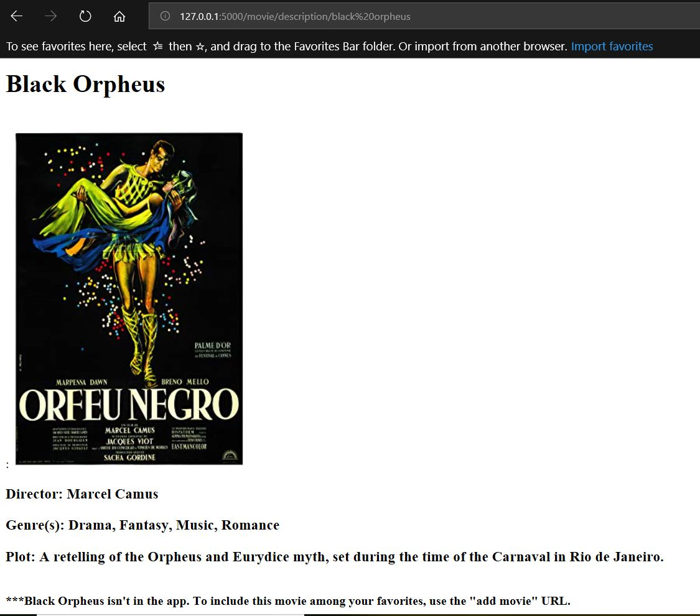
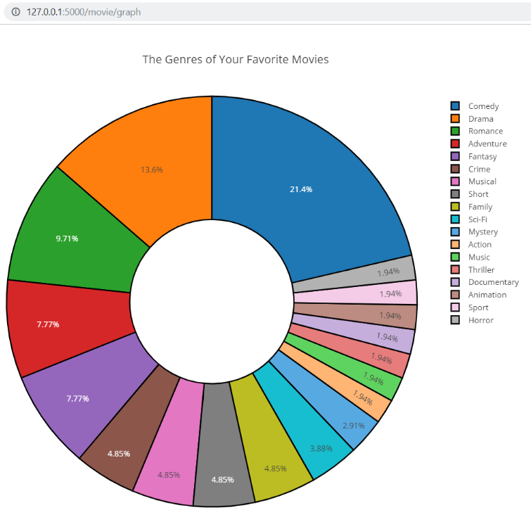
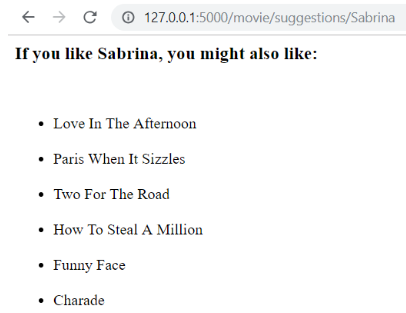
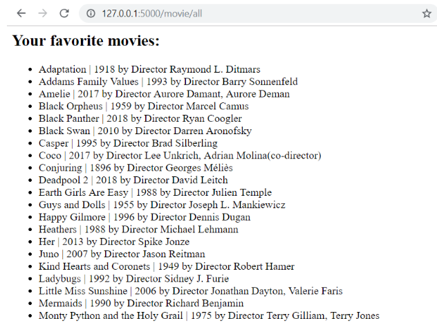

I am reviewing historical records for a women's organization to advise on the best way to preserve these documents in a digital archive and capture the stories of the community in a meaningful way. My analysis and recommendations rely on both statistical and community-informed practices to ensure the integrity of the history not just for the organization but also for those it has served. For an introduction to racially conscious and culturally competent archival theory, refer to this TEDx Talk by Dominque Luster.
Abstract:
From previous work, we have found that nontraditional students tend to have worse outcomes than their white counterparts, on average. This educational inequality increases the divide between groups and leads to unfavorable social outcomes. We ask how recessions affect college enrollment rates of nontraditional students to elucidate one way in which capital investment may differ between vulnerable and more established groups during shocks. Such a question may provide insight into group decisions during the current economic downturn. We apply a linear model to a time series of approximately 40 years to discern the probability that different groups of students will enroll in an undergraduate program based on unemployment rates. According to the literature, university enrollment tends to increase during economic downturns when jobs become scarcer. Such periods offer an opportunity for people to invest in themselves and get a return on the investment when the economy improves. Our analysis shows that the direction of changes on the probability of enrollment depend on the student group. Nevertheless, the probability of enrolling among racial minorities and those over age 25 tends to be less overall. Given these findings, we propose regular support for nontraditional student groups and further analysis to understand and meet their needs more fully.
Abstract:
As part of the Social Media Mining for Health Applications (SMM4H) Shared Task 2020, our team participated in task 2, the automatic classification of tweets that mention adverse events associated with medication use. Our general approach was to implement a variety of preprocessing steps, feature extraction methods and machine learning as well as deep learning techniques such as Support Vector Machine (SVM), Random Forest and Neural Networks in order to be able to compare various approaches to identify those most suitable for this task. Based on our results, CNN and linear SVM were the best-performing models with F1-scores of 0.5300 and 0.4976, respectively. Moving forward, future steps include further tuning the hyperparameters and experimenting with different combinations of layers for the CNN model and exploring methods for handling the imbalanced dataset including oversampling, undersampling and generating synthetic data.
Given that I entered the field of economics with a background in linguistics, I have greatly appreciated materials and instructors that explained information in an engaging and approachable way. Inspired by Chris Makler's EconGraphs, I decided to try my hand at detailed interactive graphs to make concepts, such as Harberger's triangle, simpler. I include a draft here.
This project involved backend development for an app that looks up and stores movie information. When the user searches for a movie, the app calls APIs for OMDb (information about movie background) or TasteDive (information about similar movies). The app also connects to a SQLite database, where it saves or deletes information about a user's favorite movies. One part of the app included an automated donut chart to help visualize the genres saved in the database. Having since studied more about visualization theory and the difficulty of reading a circular chart, I would choose another type of graph (e.g. histogram) in another iteration. I might also highlight the top five genres instead of showing all the ones available. Pictures of the output for the original app are shown below. For more details, refer to the repository for this project.




For more information about my education and professional experience, refer to my LinkedIn page.